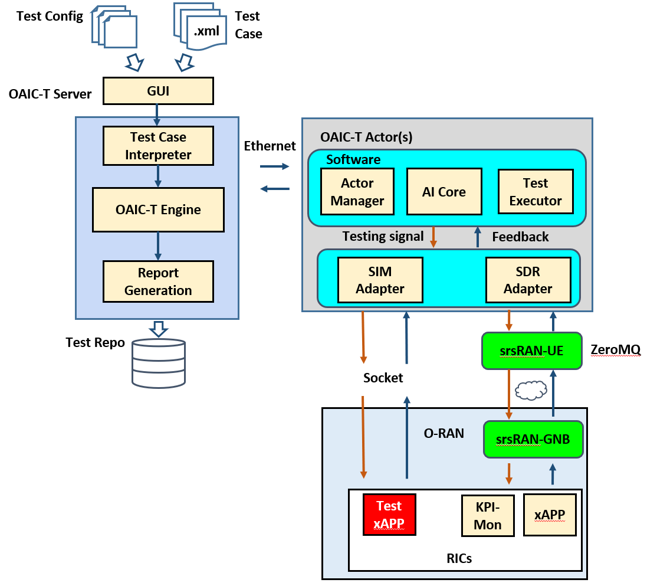

OAIC-T
About OAIC-T
OAIC-T is an open-source AI cellular testing platform which supports automated, distributed, and AI-enhanced testing of xApps in O-RAN. The OAIC-T framework consists of three major components: i). Test Input, which includes both test configuration and test script files, ii). the Server, which sets up the testing environment as described in test configuration files and orchestrates the test execution as defined in test scripts, and iii) the Actor(s), which executes test actions as instructed by the server.
{kind=link}
The server manages a number of remote testing actors, including maintaining the socket connection to each actor and monitoring its resource usage (e.g., CPU, memory, disk, and SDR hardware) and test status.
One actor consists of the actor manager, AI core, and test executor, as well as two adapters to interface with the unit under test (i.e., a cellular radio network controller). Each actor can interact with xApps/rApps under test through either the SIM Adapter or the SDR Adapter. The SIM Adapter acts as a testing xApp/rApp which can be deployed in a non-RT, near-RT, or RT RIC to send testing data and receive response to/from the RAN through socket communications. The SDR Adapter acts as a user equipment (UE) which leverages SDR-based software suite (e.g., srsRAN) to send radio testing signals to the RAN through antennas.
Get Started
To use OAIC-T, go to the oaic-t folder:
cd oaic-t
Note
The OAIC-T now only supports the testing of O-RAN under ZeroMQ mode, i.e., both eNodeB and UE are running in the same machine without the use of SDRs, also known as virtual radio. The srsRAN with E2 Agent must be installed prior to the use of oaci-t. Follow the srsRAN with E2 Agent Installation Guide to ensure that the 5G Network is successfully set up.
Pre-requisites
Install the following python package for the server:
sudo pip install configparser
Install the following python package for the actor:
sudo pip install psutil
Both server and actors can be further configured by their configuration files in their source folders. For server: server/src/config.txt. For actor: actor/src/config.txt
ZeroMQ Mode
How To Run OAIC-T, assuming both server and actor run in the same machine:
Step 1. Run the OAIC-T Server:
cd server/src
python3 server_main.py
Step 2. Run the OAIC-T Actor(s):
cd actor/src
sudo python3 actor_main.py
More actors can be started, but each actor should have a unique name. Edit the configuration file to change the actor name before running it.
The server is started with a GUI by default. Users can then create and run test tasks. A test task consists of an actor and at least one test script (json file). Examples of test scripts are included in the server source folder. The server also supports a command-line mode by setting the GUI flag as “false” or “False” in the configuration file.
Once the actor starts, you will see a message in the server console showing one Actor is registered with its name. Then, you can type commands in the console to interact with the Server. The following commands are currently supported in the command-line mode:
“list actors”: It will list all registered Actors.
“run –test test_script_file –actor actor_name”: It will run the test script in the specified actor.
Some examples of test scripts have been provided in the folder: server/src/test_examples/. Please refer to the readme.txt file for detailed descriptions of test scripts. More test script examples and test actions will be provided later.
SDR Mode
To be released soon.